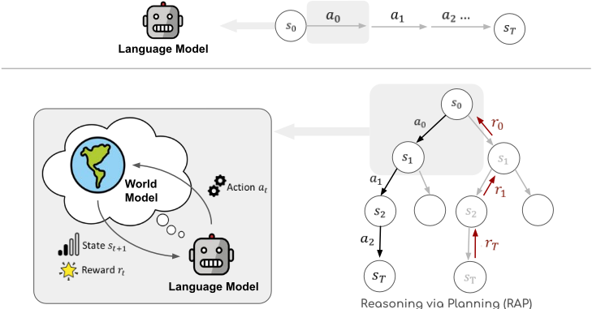
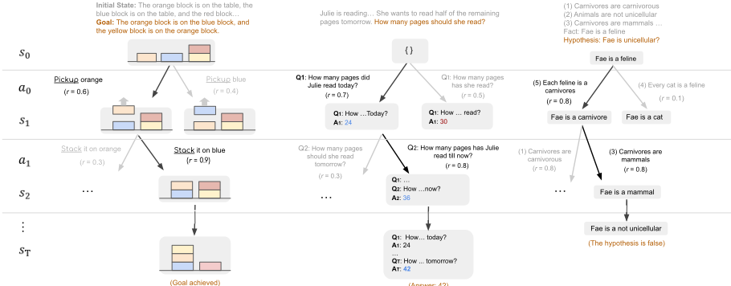
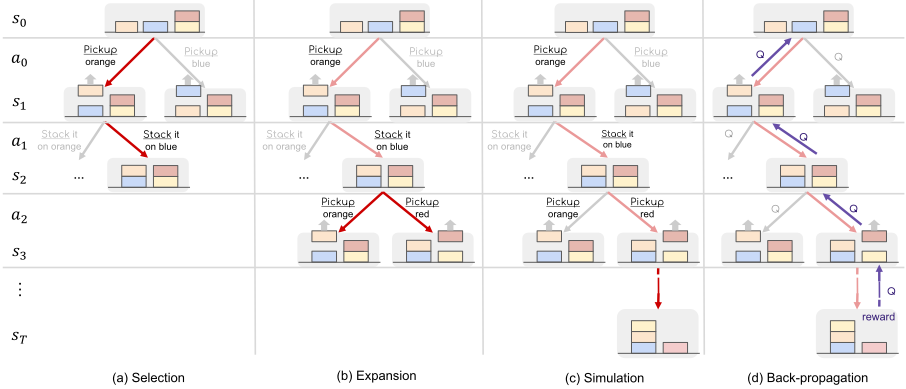
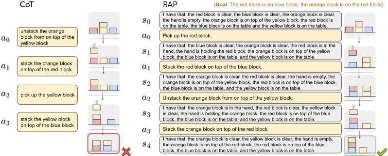
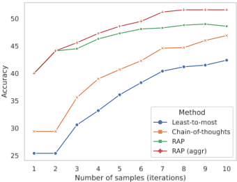

基于语言模型的推理即是用世界模型进行规划（Reasoning via Planning, RAP）
LLM 即使配合 CoT 等提示技术，在生成行动计划、多步数学与逻辑推理等人类觉得容易的任务上仍频繁失败，论文将其归因于 LLM 缺乏内部世界模型来预测状态与模拟动作后果，也没有 reward 机制来评估和回溯推理步骤。为此提出 RAP（Reasoning via Planning）框架：用 prompt 把同一个冻结 LLM 复用为 reasoning agent 与 world model 两个角色，将推理形式化为 MDP，在显式状态-动作树上运行 Monte Carlo Tree Search（MCTS），并以动作似然、状态置信度、LLM 自评估、任务启发式等 reward 引导探索与利用的平衡。实验显示 Blocksworld 计划生成平均成功率达 64%（CoT 几乎全败），LLaMA-33B+RAP 相对 GPT-4+CoT 有 33% 相对提升；GSM8K 达 48.8%，PrOntoQA 证明准确率 78.8%，均超过 CoT、least-to-most 及 self-consistency 基线。对团队而言，这是'推理时搜索+自评估换取可靠性'的代表性方法，可直接借鉴到 Agent 规划、执行回溯与中间步骤质量门控的设计中。
LLM 在生成行动计划（如 Blocksworld 方块重排）与复杂数学、逻辑推理等任务上仍表现不佳。论文将根源归结为三点：(1) 缺乏内部世界模型来预测世界状态（方块构型、中间变量值等）并模拟动作的长期后果；(2) 缺乏 reward 机制来评估并引导推理走向目标状态；(3) 由于前两者，无法在巨大的推理空间中平衡 exploration 与 exploitation，无法像人类一样进行探索替代路径、预演未来状态并迭代修正的深思熟虑规划。
提出 RAP 框架，全程基于冻结 LLM 与 prompt、不训练模型、不与真实环境交互：(1) 用 prompt 将同一个 LLM 复用为两个角色——reasoning agent（按当前状态生成动作/子问题）与 world model（预测动作后的下一状态），把推理形式化为 MDP，推理轨迹成为显式的状态-动作交替序列而非纯动作链；(2) 设计可插拔的 reward：动作似然（log probability）、状态置信度（多次采样答案中最频繁答案的比例）、LLM 自评估（'Is this reasoning step correct?' 的 Yes 概率）、任务特定启发式（如当前状态与目标的条件匹配度）；(3) 用改造版 Monte Carlo Tree Search（UCT 选择、扩展、轻量 reward 模拟、反向传播）在推理树上平衡探索与利用，找到高 reward 推理路径，并支持从死胡同回溯到早期步骤；(4) 数学推理场景引入 RAP-Aggregation 对多条路径的答案做集成；另附 adaptive prompting 技术缓解示例与测试用例难度分布不匹配问题。
Blocksworld（2/4/6 步问题）：RAP 平均成功率达 64%，而 CoT 几乎完全失败；6 步问题搜索空间可达 5^6，RAP 在 20 次迭代内 42% 的情况能找到成功计划
计划生成任务上 LLaMA-33B + RAP 超过 GPT-4 + CoT，相对提升 33%
GSM8K：RAP 准确率 48.8%，超过 CoT 与 least-to-most 的 self-consistency 变体；引入 RAP-Aggregation 后准确率再提升约 3%
PrOntoQA：答案准确率 94.2%、证明准确率 78.8%，比 CoT 基线高 14% 证明准确率，比 self-consistency CoT 高 4.4% 答案准确率
Full Blocksworld（602 例，Llama-2 70B）：Easy 与 Hard 两种设置下 RAP 均大幅超过 CoT；6 步以上的难题 CoT 成功率骤降而 RAP 保持相对较高水平（正文未给出该表具体数值）
与 CoT、self-consistency、least-to-most 等一次性自回归生成推理链的方法不同，RAP 显式建模世界状态并引入 reward 与原则性规划算法；相比 CoRe（需微调推理步生成器与验证器）和同期基于 DFS/BFS 启发式搜索的工作，RAP 无需任何训练，首次将 world model、state 与 reward 统一进一个框架，用同一个 LLM 同时充当 agent 与 world model，是适用于开放域推理（规划、数学、逻辑）的更通用规划式推理框架。
相关度级别：high
命中能力域：3.2 提示工程 | 3.3 Agent 架构与工具使用 | 3.5 评测与可靠使用
理由：直接命中 3.3：RAP 本质是一套单 Agent 的规划-执行-回溯 harness（MCTS agent loop、自评估反思、显式状态跟踪），针对的正是团队关心的单 Agent 执行可靠性与多步任务错误累积问题；同时强命中 3.2：world model 状态转移 prompt、动作提议 prompt、自评估 prompt 与 adaptive prompting 构成成套提示设计模式（附录 C 给出完整模板）。其 reward 消融实验与'轻量 reward 换取效率'的工程取舍对 3.5 的可靠性保障与成本效率权衡有直接参考价值。整个方法完全基于'用好冻结模型而非训练模型'，与团队定位一致。
建议动作：深入精读并做内部分享
arXiv:2305.14992v2 [cs.CL] 2023年10月23日
∗♣ ∗♣ ♢ ♣
Shibo Hao Yi Gu Haodi Ma Joshua Jiahua Hong Zhen Wang ♣♠ Daisy Zhe Wang ♢ Zhiting Hu ♣
♣ 加州大学圣地亚哥分校（UC San Diego），♢ 佛罗里达大学（University of Florida）
♠ 穆罕默德·本·扎耶德人工智能大学（Mohamed bin Zayed University of Artificial Intelligence）
{s5hao, yig025, jjhong, zhw085, zhh019}@ucsd.edu
{ma.haodi, daisyw}@ufl.edu
大语言模型（LLMs）已展现出卓越的推理能力，尤其是在采用思维链（CoT）提示的情况下。然而，LLMs 有时仍然难以解决对人类而言很容易的问题，例如在环境中生成实现给定目标的动作计划，或执行复杂的数学推理或逻辑推理。这一缺陷源于一个关键事实：LLMs 缺乏一个内部世界模型（world model）来预测世界状态（例如环境状态、中间变量取值）并模拟动作的长期结果。这阻碍了 LLMs 执行类似人脑的深思熟虑式规划，而这种规划涉及探索备选推理路径、预判未来状态与奖励，并迭代地改进现有推理步骤。为了克服这些局限，我们提出了一种新的 LLM 推理框架——基于规划的推理（Reasoning via Planning, RAP）。RAP 将 LLM 重新用作世界模型和推理 Agent 的双重角色，并融入了一种基于蒙特卡洛树搜索（Monte Carlo Tree Search）的有原则的规划算法，以便在庞大的推理空间中进行策略性探索。在推理过程中，LLM（作为 Agent）在 LLM（作为世界模型）和奖励的引导下逐步构建一棵推理树，并在探索与利用之间保持恰当的平衡，从而高效地获得一条高奖励的推理路径。我们将 RAP 应用于多种具有挑战性的推理问题，包括计划生成、数学推理和逻辑推断，并证明了其相对于强基线方法的优越性。采用 LLaMA-33B 的 RAP 甚至超越了采用 GPT-4 的 CoT，在计划生成设定中取得了 33% 的相对提升。1
大语言模型（LLMs）已在广泛的任务中展现出涌现的推理能力（Brown et al., 2020; Chowdhery et al., 2022;
∗ 同等贡献
1 代码可在 https://github.com/Ber666/llm-reasoners 获取
OpenAI, 2023）。近期的方法进一步提升了它们的能力，其做法是提示 LLM 生成中间推理步骤，例如思维链（Chain-of-Thought, CoT）(Wei et al., 2022)，或回答一系列子问题，例如由易到难提示（least-to-most prompting）(Zhou et al., 2022)。然而，LLM 在人类觉得容易的任务上仍然面临困难。例如，在制定将方块移动到目标状态的动作计划时，GPT-3 (Brown et al., 2020) 的成功率仅为 1%，而人类为 78% (Valmeekam et al., 2022)；这些模型在需要多步数学、逻辑或常识推理的复杂任务上也难以应对 (Huang and Chang, 2022; Mialon et al., 2023)。
人类拥有内部世界模型（internal world model），即对环境的心理表征 (Johnson-Laird, 1983, 2010; Gentner and Stevens, 2014)，它使人类能够模拟动作及其对世界状态的影响，从而针对运动控制、心理意象、推理和决策等复杂任务进行深思熟虑的规划 (Tolman, 1948; Briscoe, 2011; Schulkin, 2012; LeCun, 2022)。例如，为了制定通向目标的动作计划，基于世界模型的规划涉及探索各种可选的行动方案、通过推演可能的未来情景来评估可能出现的结果，并依据评估迭代地完善计划 (Huys et al., 2012; Gasparski and Orel, 2014; Ho et al., 2021)。这与当前的 LLM 推理形成鲜明对比——后者以自回归的方式本能地生成推理轨迹。具体而言，我们指出了当前基于 LLM 的推理存在的几个关键局限，包括：(1) 缺乏用于模拟世界状态（例如方块的布局、中间变量的取值）的内部世界模型，而这是人类规划的基础；(2) 缺乏用于评估推理并引导其趋向期望状态的奖励机制；以及由于上述两方面的局限，(3) 无法在探索与利用之间取得平衡以高效地探索庞大的推理空间。
思维链

为了解决这些局限性，本文提出了一种新框架——通过规划进行推理（Reasoning via Planning, RAP），使大语言模型（LLM）能够以接近人类有意识规划的方式进行推理。RAP 为 LLM 增加了一个世界模型，并通过有原则的规划（具体而言是蒙特卡洛树搜索，Monte Carlo Tree Search, MCTS）进行推理，在高效探索之后产生高奖励的推理轨迹（图 1）。值得注意的是，我们通过对 LLM 本身施加适当的提示将其改造（repurpose）为世界模型，从而获得该世界模型。在推理过程中，LLM 通过迭代地考虑最有前景的推理步骤（动作），并利用世界模型（即同一个经过改造的 LLM）向前展望未来的结果，从而策略性地构建一棵推理树。随后，估计出的未来奖励被反向传播，用于更新 LLM 对当前推理步骤的信念，引导其通过探索更优的备选方案来改进推理。我们基于 MCTS 的规划有效地在探索（针对未访问过的推理轨迹）与利用（针对迄今为止发现的最佳推理步骤）之间保持了恰当的平衡。
我们证明 RAP 是一个通用框架，适用于多种具有挑战性的问题，并且相对于近期流行的 LLM 推理方法取得了显著的改进。在计划生成方面，特别是在 Blocksworld（Valmeekam et al., 2023）的 2/4/6 步问题上，RAP 取得了 64% 的平均成功率，而 CoT 几乎完全失败。此外，采用 RAP 的 LLaMA-33B 超越了采用 CoT 的 GPT-4，相对提升达 33%。在数学推理领域（如 GSM8K (Cobbe et al., 2021)）以及以 PrOntoQA（Saparov and He, 2022）为代表的逻辑推断领域，RAP 也持续优于强基线方法，包括 CoT、由少到多提示（least-to-most prompting）及其自一致性变体。
基于大语言模型（LLM）的推理。LLM 推理通常涉及在产生最终答案之前，将复杂问题分解为按顺序进行的中间步骤（也称为链），其典型代表是思维链（Chain-of-Thought, CoT）提示及其变体 (Wei et al., 2022; Kojima et al., 2022)。基础 CoT 一次性生成整条链，随着步骤数量的增加，可能引入额外的错误。自一致性（Self-Consistency）(Wang et al., 2022) 采样多条链，并通过多数投票选出最佳答案。由少到多提示（least-to-most prompting）(Zhou et al., 2022) 将问题化归为更简单的子问题，并按顺序逐一回答。与我们的奖励设定类似，近期工作探索了自我评估方法，为中间步骤提供反馈 (Welleck et al., 2022; Shinn et al., 2023; Paul et al., 2023)。与我们的状态设定相一致，Li et al. (2022) 将潜在的“情境”（situations）融入 LLM，用以指代来自上下文的实体状态。与本文更相关的是，近期工作已开始探索由某些搜索算法引导的更复杂结构。例如，CoRe (Zhu et al., 2022) 针对数学应用题微调推理步骤生成器与验证器，并使用 MCTS 进行解码。与我们的工作同期，Yao et al. (2023) 应用启发式的

（答案：42）
搜索，例如深度优先/广度优先搜索，以获得更好的推理路径。然而，上述方法均未正式引入世界模型，也未将奖励和状态实例化到一个统一的框架中。与这些搜索引导的方法相比，RAP 是一个更具原则性的框架，将世界模型和奖励与先进的规划相结合。
基于 LLM 的规划。规划是智能体的一项核心能力，涉及生成一系列动作以实现特定目标 (McCarthy, 1963; Bylander, 1994)。经典规划方法已被广泛应用于机器人和具身环境中 (Camacho and Alba, 2013; Jiang et al., 2019)。近来，提示 LLM 直接进行规划的做法受到了关注并展现出潜力 (Huang et al., 2022; Singh et al., 2022; Ding et al., 2023)。此外，基于 LLM 强大的编程能力 (Lyu et al., 2023; Jojic et al., 2023; Liu et al., 2023)，近期工作首先将自然语言指令翻译为可执行的编程语言，例如规划领域描述语言（Planning Domain Description Language, PDDL），然后运行经典规划算法，例如 LLM+P (Liu et al., 2023)。然而，基于代码的规划受限于其狭窄的领域和环境，而 RAP 能够处理开放领域问题，例如数学推理和逻辑推理。更多关于世界模型和规划的相关工作在附录 D 中讨论。
在本节中，我们提出基于规划的推理（Reasoning via Planning, RAP）框架，使大语言模型（LLM）能够策略性地规划连贯的推理轨迹，从而解决广泛的推理任务。我们首先通过提示（prompting）对 LLM 加以改造，构建世界模型（第 3.1 节）。世界模型为审慎规划奠定了基础，使 LLM 能够提前规划并探寻未来的预期结果。随后，我们在第 3.2 节中介绍用于评估推理过程中每个状态的奖励。在世界模型和奖励的引导下，基于蒙特卡洛树搜索（Monte Carlo Tree Search, MCTS）的规划能够高效地探索庞大的推理空间，并找到最优的推理轨迹（第 3.3 节）。最后，当在规划过程中获得多条有前景的推理轨迹时，我们在第 3.4 节中进一步引入一种聚合方法，以产生集成结果，并进一步提升推理性能。
一般来说，世界模型用于预测在对当前状态施加某个动作之后推理的下一个状态（Ha and Schmidhuber, 2018b; Matsuo et al., 2022）。RAP 使我们能够根据手头具体的推理问题，以不同的方式实例化状态和动作的一般概念（图 2）。例如，在积木世界（Blocksworld）中，很自然地将状态定义为积木的构型（用自然语言描述），而将动作定义为移动某块积木的行为（例如“拿起橙色积木”）。在数学推理问题中，我们用状态表示中间变量的取值，并将动作设定为一个驱动推理去推导新值的子问题。在逻辑推理中，状态是我们所关注的一个事实，而动作则是为下一步演绎选择一条规则。
有了状态和动作的定义，推理过程便可以描述为一个马尔可夫决策过程（MDP）：给定当前状态 s t,t =0 , 1 ,...,T（例如初始状态 s 0），大语言模型（LLM）（作为推理 Agent）通过从其生成分布 a t ∼ p ( a | s t , c ) 中采样来生成动作空间，其中 c 是一个合适的提示（例如上下文示例）。一旦选定某个动作，世界模型随后便预测推理的下一个状态 s t +1。具体而言，我们复用同一个 LLM 来获得状态转移分布 p ( s t +1 | s t , a t , c ′ )，其中 c ′ 是另一个用于引导 LLM 生成状态的提示。例如，在积木世界中，给定先前的状态 s t 和动作 a t，LLM（作为世界模型）会生成文本 s t +1 来描述积木的新构型。
持续这一过程便得到一条推理轨迹，它由交错的状态和动作序列 ( s 0 , a 0 , s 1 , . . . , a T - 1 , s T ) 组成。这与以往的推理方法（如思维链（Chain-of-Thought, CoT；Wei et al., 2022））不同：在那些方法中，中间推理步骤仅由一个动作序列组成，例如 ( a 0 = ‘拿起红色积木’, a 1 = ‘堆叠到黄色积木上’, . . . )（对比见图 1）。用（预测出的）世界状态来增强推理，有助于 LLM 进行更有依据、更连贯的推断。需要注意的是，完整的推理轨迹是由 LLM 自身（作为带有内部世界模型的推理 Agent）模拟出来的，而无需与外部真实环境交互。这类似于人类在头脑中思索一个可能的计划。通过引入世界模型而获得的模拟未来状态的能力，使我们能够采用有原则的规划算法来高效地探索庞大的推理空间，如第 3.3 节所述。
在推理过程中，我们希望评估每个推理步骤的可行性与合意性，并基于该评估来引导推理（第 3.3 节）。对每个推理步骤（即将动作 a t 施加于状态 s t）的评估由奖励函数 r t = r ( s t , a t ) ∈ R 来完成。与状态和动作类似，奖励函数可以以不同的方式加以指定，以容纳关于所关注推理问题的任何知识或偏好。这里我们介绍几种适用于不同任务、且在我们的实验中被证明有效的常见奖励。
动作的似然（Likelihood of the action）。当 LLM 以上下文示例（in-context demonstration）和当前状态为条件生成某个动作时，该特定动作的概率反映了 LLM 的偏好。
因此，我们可以将动作的对数概率作为奖励纳入其中。该奖励反映了 LLM 作为 Agent 的“本能”，也可以用作探索何种动作的先验。
状态的置信度（Confidence of the state）。在某些问题中，状态预测并非易事。例如，在数学推理中（图 2 中图），给定一个动作（即一个子问题），世界模型通过回答该子问题来预测下一个状态。我们将状态的置信度（在此情形下即答案的置信度）作为奖励纳入其中。具体而言，我们从世界模型中抽取多个样本答案，并将最频繁出现的答案所占的比例作为置信度。更高的置信度表明状态预测与 LLM 的世界知识更加一致 (Hao et al., 2023b)，这通常会带来更可靠的推理步骤。
LLM 的自我评估（Self-evaluation by the LLM）。有时，识别出推理中的错误要比事先避免生成这些错误更容易。因此，有益的做法是让 LLM 用“这个推理步骤正确吗？”（Is this reasoning step correct?）这一问题进行自我批评，并将下一个词为词元（token）"Yes" 的概率作为奖励。该奖励评估的是 LLM 自身对推理正确性的估计。请注意，用于自我评估的具体问题可能因任务而异。
任务特定的启发式方法（Task-specific heuristics）。RAP 还允许我们灵活地将其他任务特定的启发式方法插入到奖励函数中。例如，在 Blocksworld 的规划生成中，我们将预测出的积木当前状态与目标进行比较来计算奖励（第 4.1 节）。该奖励鼓励移动计划主动地向目标迈进。
在配备了世界模型（第 3.1 节）和奖励（第 3.2 节）之后，LLM 便可以借助任意规划算法进行推理。我们采用蒙特卡洛树搜索（Monte Carlo Tree Search, MCTS）（Kocsis and Szepesvári, 2006; Coulom, 2007），这是一种强大的规划算法，它策略性地探索推理树的空间，并在探索与利用之间取得恰当的平衡，从而高效地找到高奖励的推理轨迹。
具体而言，MCTS 迭代地构建一棵推理树，其中每个节点表示一个状态，每条边表示一个动作以及执行该动作后从当前状态到下一状态的转移（图 1）。为了引导 LLM agent 扩展并探索树中最有希望的节点，该算法维护一个状态-动作价值函数 Q : S × A ↦→ R，其中 Q ( s, a ) 估计在状态 s 下执行动作 a 所能获得的期望未来奖励。图 3 展示了每次迭代中用于扩展树并更新 Q 值的四个操作。该过程持续进行，直至达到指定的计算预算（例如迭代次数），随后从树中获取所得的轨迹。更多细节以及规划算法的伪代码见附录 A 和算法 1。

选择（Selection）。第一阶段从现有树中选出对下一阶段的进一步扩展而言最有希望的一部分。从根节点（即初始状态 s 0）开始，在树的每一层，算法都会选择一个子节点作为下一个节点。当到达当前树的叶节点时，该阶段结束。图 3(a) 以红色突出显示了所选路径。为了在探索（针对访问次数较少的节点）与利用（针对高价值节点）之间取得平衡，我们使用著名的应用于树的置信上界（Upper Confidence bounds applied to Trees, UCT）（Kocsis and Szepesvári, 2006）来选择每个子节点。具体而言，在节点 s 处，我们同时考虑 Q 值（用于利用）和不确定性（用于探索）来选择树中的动作：
其中 N ( s ) 是节点 s 在先前迭代中被访问的次数，c ( s, a ) 是在状态 s 下应用 a 后得到的子节点。某个子节点之前被访问的次数越少（即对该子节点的不确定性越大），公式中的第二项就越高。权重 w 控制探索与利用之间的平衡。
扩展（Expansion）。该阶段通过向上文选定的叶节点添加新的子节点来扩展树。给定叶节点的状态，我们使用 LLM（作为 agent）采样 d 个可能的动作（例如数学推理中的子问题），然后使用 LLM（作为世界模型）预测各自对应的下一状态，从而得到 d 个子节点。注意，如果上文选定的叶节点已经是终止节点（即推理链的末端），我们将跳过扩展，直接进入反向传播（back-propagation）。
模拟（Simulation）。为了估计期望的未来奖励（即 Q 值），该阶段使用世界模型来模拟当前节点的未来情形。与上文一样，从当前节点出发，在每个节点 s 处，我们按照滚动策略（roll-out policy）生成一个动作，并使用世界模型预测下一个状态。滚动过程持续进行，直到到达终止状态。定义滚动策略的方式可以有很多种（例如，通过引入不同的随机性）。在我们的实验中，为了简单起见并降低噪声，我们遵循与上述扩展阶段类似的过程，即生成 d 个候选动作，并选取局部奖励最大的一个 a ′ = max a ′ r ( s, a ) 。在实际操作中，为了提高效率，我们舍弃了 r 中计算开销较大的组成部分（例如，来自状态置信度的奖励需要对答案进行多次采样），并使用由此得到的轻量级奖励函数在模拟过程中选择动作。
反向传播（Back-propagation）。一旦在上述阶段中到达终止状态，我们就获得了一条从根节点到终止节点的推理路径。接下来，我们对路径上的奖励进行反向传播，以更新该路径上每个状态-动作对的 Q 值。具体而言，我们通过聚合节点 s 所有未来步骤中的奖励来更新 Q ( s, a ) 。
当达到预设的 MCTS 迭代次数后，我们终止算法，并从构建的树中选择最终的推理轨迹用于评估。选择的方式有多种。一种是从根节点开始，迭代地选择 Q 值最高的动作，直到到达终止节点。此外，也可以直接选择产生最高奖励的迭代所对应的路径，或者选择被访问次数最多的叶节点（及其相应的从根到叶的路径）。在实践中，我们观察到第二种策略通常能取得最佳结果。
对于仅需最终答案的问题，例如数学推理（第 4.2 节），RAP 可以从不同的 MCTS 迭代中产生多条推理轨迹和答案，这些轨迹和答案将被聚合以产生最终答案。我们将这种机制称为 RAP-Aggregation。需要注意的是，诸如计划生成或逻辑推理之类的问题需要以完整的推理轨迹作为输出；因此，不会应用 RAP-Aggregation。
在本节中，我们通过将 RAP 框架应用于广泛的问题来展示其灵活性和有效性，这些问题包括具身环境中的计划生成（4.1）、用于求解数学应用题的数学推理（4.2），以及用于验证假设的逻辑推理（4.3）。后续各节将展示 RAP 中的世界模型形式化如何支持对状态和动作进行灵活多样的设计，以适应各种推理情境。
我们主要将 RAP 与思维链（chain-of-thought, CoT）(Wei et al., 2022) 及其变体（如由易到难提示 least-to-most prompting）(Zhou et al., 2022) 作为基线进行比较。在适用的情况下，我们还考虑对多条推理路径进行集成（也称为自一致性 self-consistency）(Wang et al., 2022)。此外，在计算资源允许的情况下，我们还将 RAP 与 GPT-4 (OpenAI, 2023) 进行比较。默认情况下，无论是我们的方法还是基线，均使用 LLaMA-33B 模型 (Touvron et al., 2023a) 作为基础大语言模型（LLM），采样温度设为 0.8。所有提示均列于附录 C 中。
规划生成任务旨在生成一系列动作以达成给定目标，且可能带有额外的约束条件。生成规划的能力对于智能具身 Agent（例如家用机器人）而言十分重要 (Puig et al., 2018)。
任务设置。为探索 RAP 框架在规划生成任务中的可行性，我们在 Blocksworld 基准测试（benchmark）(Valmeekam et al., 2022) 上对 RAP 进行适配与评估。在该基准测试中，要求 Agent 将方块按特定顺序重新排列成堆叠。我们将状态定义为方块的当前摆放形态，将动作定义为移动方块的指令。具体而言，一个动作由 4 个动词之一（即 STACK、UNSTACK、PUT 和 PICKUP）以及被操作的对象组成。对于动作空间，我们依据动作的领域限制以及方块的当前摆放形态，生成当前有效的动作。为了在状态之间进行转移，我们采取当前动作，并查询 LLM 来预测相关方块的状态变化。随后，我们通过添加新的方块条件并移除不再成立的条件来更新当前状态。一旦某个状态满足了目标中的所有条件，或达到了树的深度限制，我们便终止相应的节点。
为评估该领域内动作的质量，我们使用两种相互独立的奖励。首先，我们向 LLM 提供一些示例测试用例及其解答作为提示，然后计算在给定当前状态的条件下该动作的对数概率（即 3.2 节中的“动作似然”奖励），记为 r 1。该奖励反映了 LLM 作为推理 Agent 的直觉。当距离目标只剩很少几步时，它通常具有指示意义；而对于距离较远的目标，它则不那么可靠。此外，我们将执行动作后的新状态与目标进行比较，并给出奖励 r 2，其大小随所满足条件的数量而缩放（即“任务特定启发式”奖励）。具体而言，当所有条件均被满足时，我们会赋予一个超大的奖励，以确保该规划会被选为解答。结果。我们使用来自 Blocksworld 数据集 (Valmeekam et al., 2023) 的测试用例，并按所需的最少动作数对其进行分组，得到 30 个可在 2 步内求解的用例、57 个可在 4 步内求解的用例，以及 114 个可在 6 步内求解的用例。每个测试用例中最多有 5 个方块。作为基线方法，我们向 LLM 提供 4 个带有对应解答的测试用例作为提示，并要求它针对一个新问题生成规划。该设置与 Valmeekam et al. (2022) 中所描述的设置相同；由于解答是逐步生成的，我们将其记为思维链（Chain-of-Thought, CoT）。对于 RAP，则展示相同的提示，以帮助 LLM 计算 r 1。

| Method | 2-step | 4-step | 6-step |
|---|---|---|---|
| CoT | 0.17 | 0.02 | 0 |
| CoT - pass@10 | 0.23 | 0.07 | 0 |
| CoT (GPT-4) | 0.5 | 0.63 | 0.4 |
| RAP (10) | 1 | 0.86 | 0.26 |
| RAP (20) | 1 | 0.88 | 0.42 |
| Method | 2-step | 4-step | 6-step |
如表 1 所示，LLaMA-33B 结合思维链（CoT）只能为少数 2 步案例生成成功的计划，而在更难的问题上则完全失败。RAP 相较 CoT 有大幅提升，几乎能在 4 步内解决所有问题，并能解决一部分 6 步问题，平均成功率达到 64%。值得注意的是，6 步问题的搜索空间可高达 5^6，而我们的算法在 20 次迭代内找到成功计划的比例可达 42%。更进一步，我们的框架使 LLaMA-33B 以 33% 的相对增益超越了 GPT-4，而后者被认为具有强得多的推理能力（Bubeck et al., 2023）。
案例研究。我们在图 4 中比较了 CoT 与 RAP 的推理路径。我们将改进的原因总结如下：（1）通过在推理过程中维护世界状态，RAP 能够识别当前状态下的有效动作，避免生成非法计划。（2）当来自 LLM 的第一直觉不起作用时，RAP 能够进行回溯并尝试其他解决方案。具体而言，CoT 试图实现第二个目标，即“橙色在红色上”（orange on red），并在前两步中实现了该目标。然而，先完成第二个目标会阻碍第一个目标的满足。相反，尽管 RAP 在最初的迭代中犯了同样的错误，我们的框架会驱动 Agent 探索其他可能的路径（如 3.3 节所述），并最终生成一个成功的计划。（3）在计算 r_t 时，我们可以只将当前状态输入 LLM，而隐藏历史信息。例如，在图 4 的案例中，为了计算 a_2 的奖励，LLM 被提供一个“新的”测试用例，其中 s_2 为初始状态。这显著降低了最后几步的难度，并为前几步中更困难的决策节省出更多迭代次数。
任务设置。数学推理任务，例如 GSM8k（Cobbe et al., 2021），通常包含一段问题描述和一个最终问题。为了得出最终问题的答案，需要基于问题的上下文进行多步数学计算。因此，很自然地可以将最终问题分解为一系列更小的子问题（图 2 右侧）。我们将状态定义为中间变量的取值，将动作定义为针对某个未知中间变量提出一个增量式的子问题。随后，世界模型利用中间变量和问题描述对该子问题作出回应，并将新的中间变量取值加入下一个状态。我们将 LLM 对有用性的自我评估 r t, 1 与状态的置信度 r t, 2 通过加权几何平均 r t = r α t, 1 ∗ r 1 - α t, 2 结合起来，作为奖励函数。该奖励会鼓励提出更相关、更有用的子问题。为了考虑推理路径长度对奖励的影响，我们使用未来各步平均奖励的最大值来计算 Q 值。
| Method | Accuracy (%) |
|---|---|
| Chain-of-Thought | 29.4 |
| + SC (10) | 46.8 |
| Least-to-Most | 25.5 |
| + SC (10) | 42.5 |
| RAP (1) | 40 |
| RAP (10) | 48.6 |
| + aggr | 51.6 |
| Method | Accuracy (%) |

作为相关工作，Least-to-Most 提示（Zhou et al., 2022）在子问题分解方面与我们有着类似的想法，但它是一次性生成所有子问题。相反，RAP 基于当前状态 s t 来考虑每个动作 a t，从而能够做出更有依据的决策。
结果。我们在 GSM8k 上评估我们的框架，这是一个小学数学应用题数据集。我们还评估了基座模型在思维链（CoT）提示（Wei et al., 2022）、Least-to-Most 提示（Zhou et al., 2022）以及它们的自洽性（self-consistency）变体（Wang et al., 2022）下的表现，作为基线。所有方法均使用相同的 4-shot 示例演示。
如表 2 所示，我们的 RAP 框架正确回答了 48.8% 的问题，优于思维链（Chain-of-Thought）和带自洽性（Self-Consistency）的 Least-to-Most 提示。值得注意的是，这一结果是在 RAP 仅根据奖励选择一条推理轨迹的情况下取得的。引入 RAP-Aggregate 后，准确率进一步提升了约 3%。我们还计算了 MCTS 中不同迭代次数以及基线中不同自洽性采样数量下的准确率，如图 5 所示。我们发现，在所有迭代次数/采样数量下，RAP-Aggregation 始终优于基线，这表明当只允许少量迭代/采样时，我们的框架在奖励的引导下能够显著更好地找到可靠的推理路径。
| Method | Pred Acc | Proof Acc |
|---|---|---|
| CoT | 87.8 | 64.8 |
| CoT + SC | 89.8 | - |
| RAP (Ours) | 94.2 | 78.8 |
| Method | Pred Acc | Proof Acc |
Task setup. A logical reasoning task (e.g. PrOntoQA (Saparov and He, 2022)) typically provides a set of facts and logical rules , and a model is required to verify if a hypothesis fact is true or false by applying the logical rules to the given facts, as illustrated in Figure 2. These tasks not only require the correct final answer (true/false), but also a detailed proof demonstrating the result. To apply our framework, we define the state as a fact we are focusing on, analogous to the human's working memory (Baddeley, 1992) for inference. An action is defined as selecting a rule from the fact set. The world model performs a one-hop reasoning step to get a new fact as the next state. The reward is calculated with Self-evaluation (Section 3.2. Specifically, we prompt the LLM with a few examples with their labels to help it better understand the quality of reasoning steps. We use the average reward of future steps to update the Q function , the same as Equation (2) for GSM8k.
Results. We assess the performance of our RAP framework on PrOntoQA (Saparov and He, 2022) and adopt their settings of 'true' ontology (using real-world knowledge), 'random' ordering of rules. We mix the examples requiring 3, 4, and 5 reasoning hops in a correct proof to prevent LLM from memorizing when to finish the reasoning. We sample 500 examples from the generation script released by Saparov and He (2022). We compare both the prediction accuracy of the final answer and the accuracy of the entire proof. We do 20 iterations for MCTS and 20 samples for self-consistency.
As the results presented in Table 3, our framework achieves a correct answer rate of 94.2% and a proof accuracy of 78.8%, surpassing the CoT baseline by 14% proof accuracy and the selfconsistency CoT baseline by 4 . 4% prediction accuracy. Such substantial improvements clearly demonstrate the effectiveness of RAP in solving logical reasoning problems in PrOntoQA. Also, as the case illustrated in Figure 2, RAP can effectively recognize when a reasoning chain comes to a dead end, and propagate the signal back to earlier reasoning steps, with the planning algorithm allowing it to explore alternatives to the previous steps. The selfevaluation reward further helps RAP to recognize potential incorrect reasoning steps, encouraging the agent to avoid them in future iterations.
| Setting | Method | 2-step | 4-step | 6-step | 8-step | 10-step | 12-step | All |
|---|---|---|---|---|---|---|---|---|
| Easy | CoT | 0.49 | 0.18 | 0.06 | 0.01 | 0.01 | 0 | 0.08 |
| Easy | RAP (10) | 1 | 0.99 | 0.75 | 0.61 | 0.32 | 0.32 | 0.65 |
| Hard | CoT | 0.22 | 0.14 | 0.02 | 0.02 | 0 | 0 | 0.05 |
| Hard | RAP (10) | 0.67 | 0.76 | 0.74 | 0.48 | 0.17 | 0.09 | 0.51 |
| Setting | Method | 2-step | 4-step | 6-step | 8-step | 10-step | 12-step | All |
为了进一步研究 RAP 能否帮助更强大的大语言模型（LLM）解决更复杂的问题，我们使用能力更强的 LLM——Llama-2 70B (Touvron et al., 2023b)——在完整的 Blocksworld (Valmeekam et al., 2023) 数据集上开展了实验。
完整的 Blocksworld (Valmeekam et al., 2023) 数据集包含 602 个测试用例。我们根据每个测试用例所需的最少动作数对其进行分组。我们的实验在两种不同的设置下进行：简单（Easy）和困难（Hard）。在 Easy 设置中，我们假设对每个用例所需的最少动作数具有先验知识。利用这一信息，我们选用与测试用例具有相同最少动作数的演示用例。对于每一组用例，我们随机选取 10 个用例构成一个演示用例池，其余用例则留作测试集。在推理过程中，我们从该池中随机采样 4-shot 演示用例，并利用它们来构建提示。在 Hard 设置中，我们从完整数据集中随机选取 10 个用例组成演示用例池，随后将这些用例从测试集中排除。在推理过程中，我们从这一全局池中随机采样 4-shot 演示用例，而不考虑测试用例所需的最少动作数。
我们采用思维链（CoT）提示 (Wei et al., 2022) 作为基线，并使用一种改进的提示技术（附录 E）对我们的 RAP (10)（即 10 次迭代）进行评估。我们的实验结果总结于表 4。在 Easy 和 Hard 两种设置下，RAP 的性能均大幅优于 CoT。值得注意的是，当测试用例需要更多步骤（六步或以上）才能解决时，CoT 的成功率急剧下降，而 RAP 则保持了相对较高的成功率。将这些结果与 4.1 节进行比较，我们还得出结论：RAP 是一个通用框架，无论 LLM 自身的内在能力如何，它都能够增强 LLM 的推理能力。
在我们的主要实验中，当前实验所采用的奖励组合是基于启发式方法和我们的探索性实验来选择的。为了理解奖励选择对 LLM 推理的影响，我们针对计划生成（表 5）和数学推理（表 6）的奖励补充了全面的实验。
总体而言，多种奖励的组合有助于提升性能。然而，某一奖励的效果取决于任务本身的性质。例如，动作似然奖励对计划生成至关重要，但对数学推理的帮助不大。更多讨论见附录 F。
在本文中，我们提出了通过规划进行推理（Reasoning via Planning, RAP），这是一种新颖的大语言模型（LLM）推理框架，它赋予 LLM 一种类似于人类战略规划的推理能力。我们的框架将 LLM 重新用作世界模型和推理智能体，使 LLM 能够模拟世界状态并预测动作结果，并通过蒙特卡洛树搜索（Monte Carlo Tree Search）在探索与利用之间实现有效平衡。在多种具有挑战性的推理问题上开展的大量实验表明，RAP 优于多种当代基于思维链（CoT）的推理方法，在某些设置下甚至优于先进的 GPT-4。
在本工作中，我们主要关注使用冻结的 LLM，其能力可能受限于预训练。未来，值得探索如何对 LLM 进行微调，使其更好地进行推理并充当世界模型（Xiang et al., 2023），以及如何将外部工具（Hao et al., 2023a; Schick et al., 2023）与 RAP 相结合，以解决更复杂的现实世界问题。
在本文中，我们主要关注计划生成、数学推理和逻辑推理方面的应用，不涉及显著的伦理问题。我们认识到，未来关于 LLM 推理在更广泛应用中的研究可能存在被滥用的风险，我们建议在将相关技术应用于现实世界之前，对安全的各个方面进行仔细考量。
我们将蒙特卡洛树搜索（MCTS）改造用于搜索最优推理路径（算法 1）。与 MCTS 的传统应用相比，我们面临的是庞大的推理空间以及大语言模型（LLM）高昂的计算开销。因此，在我们的实现中，我们对经典 MCTS 做了若干修改：（1）对于开放域问题（例如数学问题），无法枚举所有动作（子问题），因此我们以当前状态的提示和上下文示例为条件，从 LLM 中采样固定数量的潜在动作，从而缩减动作空间。（2）在选择阶段，如果存在尚未被访问过的动作，我们先用轻量级的局部奖励（例如自我评估奖励）来估计 Q 值，再使用 UCT 选择动作。这为探索提供了先验知识，在迭代预算有限的情况下，这一点至关重要。
我们使用温度（temperature）为 0.8 的随机采样。生成过程在达到最大长度 2048 或遇到换行 token 时被截断。
我们的所有实验均在 4 × NVIDIA A5000 GPU（24GB 显存）上运行。
我们在下方展示用于计算 RAP 动作似然的提示。同样的提示也被应用于 CoT 基线。<init_state> 和 <goals> 将由待求解的问题进行实例化。
我正在玩一组积木，需要将这些积木堆叠成若干摞。以下是我可以执行的动作：拿起一块积木；从另一块积木上取下一块积木；放下一块积木；将一块积木堆叠到另一块积木上。我对我的动作有以下限制：
积木。
我的计划如下：[PLAN] 从橙色积木上取下黄色积木 放下黄色积木 拿起橙色积木
输入：初始状态 s 0、状态转移概率函数 p θ、奖励函数 r θ、动作生成器 p ϕ、生成动作的数量 d、深度限制 L、模拟次数 N 以及探索权重 w
1: 初始化动作记忆 A : S ↦→ A、子节点 c : S × A ↦→ S 和奖励 r : S × A ↦→ R
2: 初始化状态-动作价值函数 Q : S × A ↦→ R 和访问计数器 N : S ↦→ N
3: for n ← 0 , . . . , N - 1 do
4: t ← 0
5: while N ( s t ) > 0 do ▷ 选择
6: N ( s t ) ← N ( s t ) + 1
7: a t ← arg max a ∈ A ( s t ) [ Q ( s t , a ) + w √ ln N ( s t ) N ( c ( s t ,a )) ]
8: r t = r ( s t , a t ) , s t +1 ← c ( s t , a t )
9: t ← t +1
10: end while
11: while s t 不是终止状态 ∧ t ≤ L do
12: for i ← 1 , . . . , d do ▷ 扩展
13: 采样 a ( i ) t ∼ p ϕ ( a | s t )、s ( i ) t +1 ∼ p θ ( s t , a ( i ) t ) 以及 r ( i ) t ∼ r θ ( s t , a ( i ) t )
14: 更新 A ( s t ) ←{ a ( i ) t } d i =1 、c ( s t , a ( i ) t ) ← s ( i ) t +1 以及 r ( s t , a t ) ← r ( i ) t
15: end for
16: a t +1 ← arg max a ∈ A ( s t ) r ( s t , a t ) ▷ 模拟
17: r t ← r ( s t , a t ) , s t +1 ← c ( s t , a t )
18: t ← t +1
19: end while
20: for t ′ ← t, . . . , 0 do ▷ 反向传播
21: 用 { r t ′ , r t ′ +1 , . . . , r t } 更新 Q ( s t ′ , a t ′ )
22: end for
23: end for
把橙色积木堆叠到红色积木上 [PLAN END] [STATEMENT] 作为初始条件，我已知：橙色积木上方无遮挡，黄色积木上方无遮挡，手是空的，蓝色积木在红色积木上面，橙色积木在蓝色积木上面，红色积木在桌子上，黄色积木在桌子上。我的目标是让蓝色积木在红色积木上面，并且黄色积木在橙色积木上面。我的计划如下：[PLAN] 拿起黄色积木 把黄色积木堆叠到橙色积木上 [PLAN END] [STATEMENT] 作为初始条件，我已知：红色积木上方无遮挡，蓝色积木上方无遮挡，橙色积木上方无遮挡，手是空的，蓝色积木在黄色积木上面，红色积木在桌子上，橙色积木在桌子上，黄色积木在桌子上。我的目标是让蓝色积木在橙色积木上面，并且黄色积木在红色积木上面。我的计划如下：[PLAN] 从黄色积木上取下蓝色积木 把蓝色积木堆叠到橙色积木上 拿起黄色积木 把黄色积木堆叠到红色积木上 [PLAN END] [STATEMENT] 作为初始条件，我已知：红色积木上方无遮挡，蓝色积木上方无遮挡，黄色积木上方无遮挡，手是空的，黄色积木在橙色积木上面，红色积木在桌子上，蓝色积木在桌子上，橙色积木在桌子上。我的目标是让橙色积木在蓝色积木上面，并且黄色积木在
[PLAN] 从橙色积木上取下黄色积木 将黄色积木堆叠到红色积木上 拿起橙色积木 将橙色积木堆叠到蓝色积木上 [PLAN END]
[STATEMENT] 作为初始条件，我有：<initial_state>。我的目标是拥有：<goals>。
[PLAN]
对于基于世界模型的下一状态预测，我们应用以上一个动作为条件的提示词。这里我们以' pick up '动作之后用于更新状态的提示词为例。同样，<state> 和 <action> 将用当前的状态和动作来实例化。
我正在玩一组积木，需要将积木堆叠成堆。以下是我可以执行的动作
拿起一块积木 从另一块积木上取下一块积木 放下一块积木 将一块积木堆叠到另一块积木上
在给定一个初始状态和一个动作后，给出执行该动作后的新状态。
[SCENARIO 1] [STATE 0] 我有：白色积木无遮挡，青色积木无遮挡，棕色积木无遮挡，手是空的，白色积木在紫色积木上，紫色积木在桌子上，青色积木在桌子上，棕色积木在桌子上。[ACTION] 拿起棕色积木。[CHANGE] 手原本是空的，现在拿着棕色积木；棕色积木原本在桌子上，现在在手中；并且棕色积木不再是无遮挡的。
白色积木在紫色积木上，紫色积木在桌子上，青色积木在桌子上。
[SCENARIO 2]
[STATE 0] 我有：紫色积木无遮挡，青色积木无遮挡，白色积木无遮挡，手是空的，白色积木在棕色积木上，紫色积木在桌子上，青色积木在桌子上，棕色积木在桌子上。
[ACTION] 拿起青色积木。
[STATE 1] 我有：青色积木在手中，白色积木无遮挡，紫色积木无遮挡，手拿着青色积木，白色积木在棕色积木上，紫色积木在桌子上，棕色积木在桌子上。
[SCENARIO 3] [STATE 0] <state> [ACTION] <action> [CHANGE]
我们在下方展示 RAP 用于数学推理的提示（prompt）。该提示既用于动作提议，也用于下一状态预测。在实例化 <question> 之后，我们向提示附加前缀 Question 5.1，以便我们能够用大语言模型（LLM）采样第一个动作。后续动作的采样方式类似，不同之处在于，需要按照上下文示例（in-context demonstration）的格式，将所有先前的子问题和子答案附加到提示中。下一状态预测（即回答子问题）的工作方式与此相同。
给定一个问题，请将其分解为若干子问题。对于每个子问题，请用完整的句子作答，并以 "The answer is" 结尾。当原始问题可以被回答时，请以 "Now we can answer the question: " 作为该子问题的开头。
Question 1.1: Mohamed 现在多大年纪？Answer 1.1: 他现在 30 * 2 = 60 岁。The answer is 60. Question 1.2: Mohamed 四
Question 1.4: Now we can answer the question: Kody 现在多大年纪？Answer 1.4: 她现在 28 + 4 32 岁。The answer is 32.
Question 2: 在一个没有月亮的夜晚，三只萤火虫在晚风中飞舞。随后，又有比一打少四只的萤火虫加入了它们，接着其中两只萤火虫飞走了。还剩下多少只萤火虫？
Question 2.1: 有多少只萤火虫加入了？
Question 3: Ali 有四张 10 美元纸币和六张 20 美元纸币，这些是他在 James 先生的农场打工后攒下的钱。Ali 将他拥有的总钱数的一半给了她的妹妹，并用剩余金额的 3/5 购买晚餐。计算他买完晚餐后还有多少钱。
Question 3.1: Ali 总共有多少钱？
Answer 3.1: Ali 有四张 10 美元纸币和六张 20 美元纸币。所以他共有 4 * 10 + 6 * 20 = 160 美元。The answer is 160.
Answer 3.2: Ali 把他拥有的总钱数的一半给了他的妹妹。所以他给了妹妹 160 / 2 = 80 美元。The answer is 80.
Question 3.5: Now we can answer the question: Ali 买完晚餐后还有多少钱？Answer 3.5: 买完晚餐后，Ali 还剩 80 - 48 = 32 美元。The answer is 32.
Question 4: 一辆汽车正行驶在一条有许多弯道的隧道中。过了一段时间后，汽车必须穿过一个环道，该环道总共需要 4 次右转。第 1 次转弯后，它行驶了 5 米。第 2 次转弯后，它行驶了 8 米。第 3 次转弯后，它又向前行驶了一小段，而在第 4 次转弯处，它立即驶出了隧道。如果汽车在这个环道上总共行驶了 23 米，那么它在第 3 次转弯后需要行驶多远？
Answer 4.1: 它在第 1 次转弯后行驶了 5 米，第 2 次转弯后行驶了 8 米，第 4 次转弯后行驶了 0 米。总共是 5 + 8 + 0 = 13 米。The answer is 13. Question 4.2: Now we can answer the question: 汽车在第 3 次转弯后需要行驶多远？Answer 4.2: 汽车总共已行驶
事实 5：素数是素数。实数是数。每个整数都是实数。实数不是虚数。梅森素数是素数。复数是虚数。每个素数都是自然数。自然数是正数。每个梅森素数都是素数。每个自然数都是整数。
查询 5：真或假：7 是虚数。断言 5.1：7 不是虚数。
下一步 5.1：结束。
断言 5.1：7 是自然数。
下一步 5.1：每个自然数都是整数。
断言 5.2：7 是素数。
下一步 5.2：每个素数都是自然数。
断言 5.3：7 是实数。
下一步 5.3：实数不是虚数。
断言 5.4：7 是整数。
下一步 5.4：每个整数都是实数。
事实 6：蜘蛛不是六足的。昆虫是六足的。昆虫是节肢动物。每个动物都不是单细胞的。无脊椎动物是动物。鳞翅目昆虫是昆虫。每个节肢动物都是分节的。节肢动物是无脊椎动物。每个蝴蝶都是鳞翅目昆虫。Stella 是蝴蝶。查询 6：真或假：Stella 是六足的。断言 6.1：Stella 是昆虫。下一步 6.1：昆虫是六足的。断言 6.2：Stella 是鳞翅目昆虫。下一步 6.2：鳞翅目昆虫是昆虫。断言 6.3：Stella 是蝴蝶。下一步 6.3：每个蝴蝶都是鳞翅目昆虫。断言 6.4：Stella 是六足的。下一步 6.4：结束。事实 7：<fact>
近年来，规划算法（Sekar et al., 2020）取得了成功的应用，例如 AlphaZero（Silver et al., 2017）和 MuZero（Schrittwieser et al., 2020）。这些算法通常基于树状结构的搜索，其设计旨在有效地保持探索与利用之间的平衡。对转移动力学的掌握是规划的前提条件，近期基于模型的强化学习（model-based reinforcement learning）研究提出学习一个世界模型（world model，或称动力学模型），用于进行规划或辅助策略学习。为了提高样本效率，以往的研究尝试从离线轨迹中学习世界模型，并在世界模型内部直接学习策略（Ha and Schmidhuber, 2018a,b）。借助世界模型中的潜在想象（latent imagination），强化学习（RL）智能体可以被训练用于解决长时程任务（Hafner et al., 2019, 2020）。此外，世界模型也被证明对物理机器人学习有所帮助（Wu et al., 2023）。在本文中，我们将大语言模型（LLMs）用作世界模型，并应用规划算法来搜索推理路径。这在精神上类似于模型预测控制（Camacho and Alba, 2013）。与以往工作相比，我们的框架使用通用的大语言模型作为世界模型，并且能够适配到广泛的开放域推理任务。Xiang et al. (2023) 提出通过外部世界模型来训练大语言模型以获得具身经验，而 RAP 则聚焦于推理阶段，并与任何训练方法兼容。
| 0 | 1 | 2 | 3 |
|---|---|---|---|
| R 1 | R 2 | R 3 | Success |
| ✓ | ✓ | ✗ ✓ | 0.88 |
| ✓ | ✓ | 0.91 | |
| ✓ | ✗ | ✗ | 0.46 |
| ✗ | ✓ | ✗ | 0.21 |
| ✗ | ✗ | ✓ | 0.14 |
| ✗ | ✗ | ✗ | 0.02 |
| 0 | 1 | 2 | 3 |
| 0 | 1 | 2 | 3 | 4 | 5 |
|---|---|---|---|---|---|
| R 1 | R 2 | R 3 | RAP (1) | RAP (10) | +aggr |
| ✓ | ✗ | ✓ | 0.410 | 0.450 | 0.503 |
| ✓ | ✗ | ✗ | 0.350 | 0.447 | 0.490 |
| ✓ | ✓ | ✗ | 0.373 | 0.423 | 0.443 |
| 0 | 1 | 2 | 3 | 4 | 5 |
通过初步实验，我们观察到，大语言模型（LLM）的性能会受到示例案例与测试案例之间难度差异的影响。以 RAP 为例，当预测出新的状态时，我们会将剩余任务重新表述为一个新的测试案例，并以预测得到的新状态对其进行初始化。这一新的测试案例所需的最少动作数会更少，从而导致示例案例与新案例之间的分布不一致。为缓解这一问题，我们预先计算了示例案例的中间状态。在推理过程中，对于每次迭代中的每个新状态，我们从轨迹的开头进行截断，随着搜索树的不断加深，示例案例的最少动作数也随之减少。该技术显著提升了 RAP 的性能，对于更为复杂的问题尤其有效，因为这类问题更容易受到分布不匹配的影响。
结果。我们针对规划生成（表 5）和数学推理（表 6）中的奖励开展了全面的实验。请注意，在这两张表中，第一行均表示我们在主实验中所采用的设置。如表 5 所示，动作似然与任务特定奖励的组合（第 1 行）能够显著优于单一奖励的基线（第 3、4、5 行）。有趣的是，加入自我评估奖励还能小幅进一步提升性能（第 2 行）。此外，如表 6 中 GSM8k 前 300 个样本的结果所示，在置信度奖励（第 2 行）的基础上加入动作似然（第 3 行）或自我评估（第 1 行），都能提升仅使用置信度奖励（第 1 行）且只进行一次迭代时的 RAP 性能，但随着迭代次数的增加，动作似然奖励会降低准确率。自我评估奖励总体上带来了最佳性能。这表明，自我评估奖励作为一种有效且计算高效的探索先验，在引导推理方面具有重要意义。
自我评估与动作似然。自我评估奖励和动作似然奖励尤其值得关注，因为它们可以应用于广泛的推理任务。一般而言，最佳的使用方式以及与其他奖励的组合需要基于经验的设计和对任务本质的理解，其有效性在不同任务之间可能存在显著差异。在此，我们提供一些奖励选择背后的直观认识：
(a) 对于单个推理步骤简短且结构化的问题，动作似然可以具有很强的指示性。否则，它可能受到不重要 token 的干扰而变得不可靠。例如，Blocksworld 领域中的单个步骤通常遵循特定的模式（例如，PICK/PUT/STACK 一个方块……），这使得动作似然具有指示性。然而，在数学领域，推理步骤以自然语言句子表达，具有更大的自由度，并可能引入噪声。
(b) 对于那些事后识别错误比在生成过程中避免错误更容易的问题，自我评估成为一种有助于提升推理准确性的机制。在数学推理中，LLM 可能一开始难以生成正确的推理步骤，但检测计算错误或逻辑错误则更为可行。然而，在 Blocksworld 中，评估候选动作的质量并不简单直接，仍然需要多步推理。这一特性降低了自我评估奖励的准确性，使其帮助作用有所减弱，尤其是在似然已经为搜索提供了良好直觉的情况下。